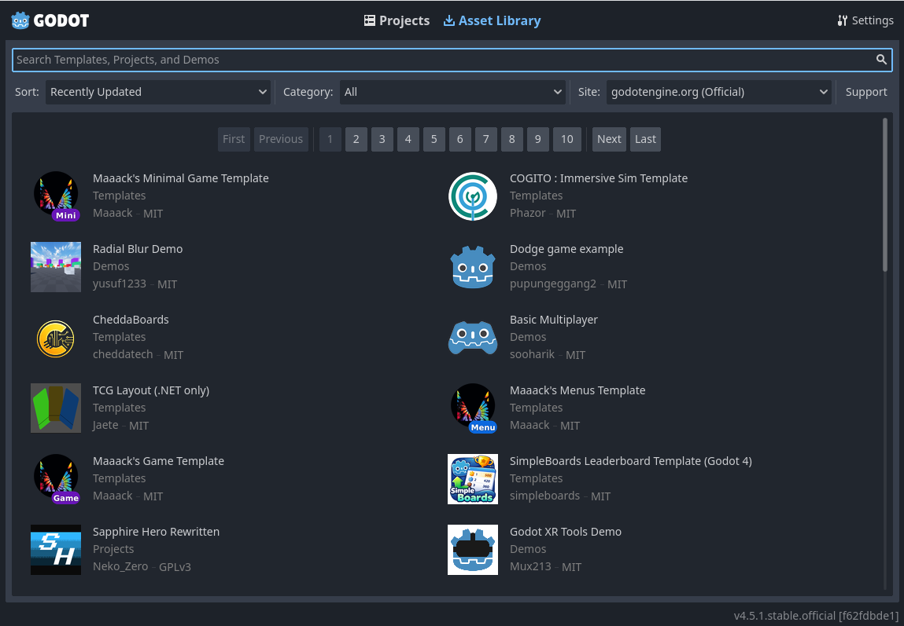
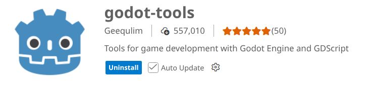
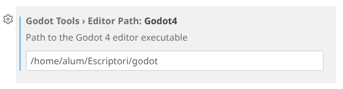
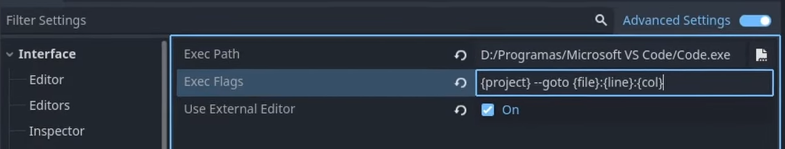

Unit 7.1 Introduction to Game Engines
In this unit, we will explore the concept of game engines, their significance in game development, and how they streamline the process of creating interactive experiences. We will also look at some popular game engines used in the industry today.
What is a Game Engine?
A game engine is a software framework designed to facilitate the development of video games. It provides developers with a suite of tools and features that simplify the process of creating, rendering, and managing game content. Game engines typically include components for graphics rendering, physics simulation, audio management, input handling, and more.
History of Game Engines
The concept of game engines dates back to the early days of video gaming. In the 1980s and 1990s, game developers began creating reusable code libraries to streamline the development process. As games became more complex, the need for comprehensive frameworks led to the emergence of dedicated game engines.
In the late 1990s, engines like id Tech 1 (used in games like Doom and Quake), Build Engine (used in Duke Nukem 3D) and Unreal Engine 1 (used in Unreal Tournament) set the stage for modern game development. These engines provided developers with powerful tools to create immersive 3D environments and complex gameplay mechanics.
In the 2000s, engines became the standard for game development, with companies like Epic Games releasing Unreal Engine 2 and Unreal Engine 3, and Valve developing the Source Engine. These engines introduced advanced graphics capabilities, improved physics simulations, and more robust development tools, enabling the creation of highly detailed and interactive game worlds.
The emergence of Unity in 2005 marked a significant milestone in game engine history. Unity's user-friendly interface and cross-platform capabilities made it accessible to indie developers and hobbyists, democratizing game development.
In the 2010s, game engines became available to everyone, with engines like Unreal Engine 4 and Unity 5 offering free versions for small developers. This era also saw the rise of mobile gaming, with engines like Cocos2d-x and Godot catering to mobile platforms.
Key Features of Game Engines
Game engines typically offer a range of features that facilitate game development, including:
- Graphics Rendering: Game engines provide tools for rendering 2D and 3D graphics, including support for shaders, lighting, and textures.
- Physics Simulation: Many engines include physics engines that simulate real-world physics, such as collision detection, rigid body dynamics, and fluid dynamics.
- Audio Management: Game engines often include audio systems for managing sound effects, music, and spatial audio.
- Input Handling: Engines provide support for various input devices, such as keyboards, mice, game controllers, and touchscreens.
- Scripting and Programming: Game engines typically support scripting languages (e.g., Lua, Python) or programming languages (e.g., C++, C#) to allow developers to create custom gameplay mechanics and logic.
- Asset Management: Game engines often include tools for managing game assets, such as models, textures, animations, and audio files.
- Level Design Tools: Many engines provide visual editors for designing game levels and environments.
- Cross-Platform Support: Many game engines support multiple platforms, allowing developers to create games that can run on various devices, such as PCs, consoles, and mobile devices.
- Networking: Some game engines include built-in support for multiplayer networking, enabling developers to create online multiplayer games.
- Artificial Intelligence: Game engines may provide tools for implementing AI behaviors, such as pathfinding and decision-making.
Popular Game Engines
Some of the most widely used game engines in the industry today include:
- Unreal Engine: Developed by Epic Games, Unreal Engine is known for its high-fidelity graphics and robust toolset. It is widely used for AAA game development and supports a variety of platforms, including PC, consoles, and mobile devices. Uses a visual scripting system called Blueprints, making it accessible to non-programmers, but also supports C++ for more advanced development.
- Unity: Unity is a versatile and user-friendly engine that caters to both indie developers and large studios. It supports 2D and 3D game development and offers a vast asset store for developers to access pre-made assets and tools. The programming is primarily done in C#.
- Godot: An open-source game engine that has gained popularity for its flexibility and ease of use. Godot supports both 2D and 3D game development and has a dedicated community of developers. The programing language used is GDScript, which is similar to Python, but also supports C# and VisualScript.
- CryEngine: Known for its stunning graphics capabilities, CryEngine is used in games like Crysis and offers advanced rendering features and physics simulations. The primary programming language is C++, but it also supports Lua for scripting.
- Cocos2d-x: A popular engine for mobile game development, Cocos2d-x is lightweight and optimized for performance on mobile devices. The primary programming language is C++, but it also supports Lua and JavaScript.
- GameMaker Studio: A user-friendly engine that is ideal for 2D game development. It features a drag-and-drop interface and a scripting language called GameMaker Language (GML) for more advanced functionality.
- GDevelop: An open-source, cross-platform game engine designed for 2D game development. It features a visual programming interface and supports scripting in JavaScript.
Godot Engine
Godot is an open-source game engine that has gained popularity for its flexibility and ease of use. It supports both 2D and 3D game development and has a dedicated community of developers. Godot uses its own scripting language called GDScript, which is similar to Python, but also supports C# and VisualScript.
For this course we will be using the Godot Engine due to its accessibility, robust features, and supportive community. It is an excellent choice for both beginners and experienced developers looking to create engaging games.
Installing Godot Engine
Godot Engine does not require installation in the traditional sense. You can download the executable file for your operating system from the official Godot website. Once downloaded, simply run the executable to start using Godot.
We will use the Godot Engine version 4.5.1 for this course. There are also a version for .NET developing, but we will use the standard version.
The Godot Documentation can be found at: Godot Documentation
The Godot interface
The Project Manager
When you first open Godot, you will see the Project Manager, where you can create new projects or open existing ones. From here, you can manage your projects, access templates, and configure settings.

You can also go to the Asset Library to download free assets and plugins created by the Godot community. The first time you go to this tab you'll see a "Go Online" button. For privacy reasons, the Godot project manager does not access the internet by default. To change this click the "Go Online" button. You can change this option later in the settings.

The Editor Interface
Once you create or open a project, you will be taken to the Godot Editor interface. The main components of the editor include:
- Top Toolbar: Located at the top of the interface, it contains buttons for common actions such as saving, running the project, and accessing settings:
- Main Menu: Located at the top of the interface, it provides access to various tools and options for managing your project.
- Workspace Panels: In the center. You can switch between different workspaces, such as 2D, 3D, Script, and Asset Library.
- Movie Maker Panel: Located on the right side, it contains tools for creating and managing scenes, nodes, and resources.

- Scene tabs: Below the top toolbar, you will find tabs for different open scenes. You can switch between scenes by clicking on the tabs.

- Viewport: The central area of the interface where you can view and edit your game scenes. The viewport changes depending on whether you are in 2D or 3D mode.

On both sides of the viewport sit the docks. And at the bottom of the window lies the bottom panel:
- Scene Dock: Located on the left side, it shows the hierarchy of nodes in the current scene. You can use this dock to add, remove, and organize nodes.

- FileSystem Dock: Located on the left side, it displays the files and folders in your project. You can use this dock to manage your project assets.

- Inspector Dock: Located on the right side, it displays the properties of the selected node or resource. You can use this dock to modify the attributes of nodes and resources.

- Bottom Panel: Located at the bottom of the interface, it contains various tabs for debugging, output, animation and other tools.

Workspaces
Godot provides different workspaces tailored for specific tasks in game development. You can switch between these workspaces using the buttons in the top toolbar:
- 2D Workspace: Used for creating and editing 2D game scenes. The viewport displays a 2D grid where you can place and manipulate 2D nodes.
- 3D Workspace: Used for creating and editing 3D game scenes. The viewport displays a 3D environment where you can place and manipulate 3D nodes.
- Script Workspace: Used for writing and editing scripts. The viewport displays the script editor, where you can write code for your game.
- Asset Library Workspace: Used for browsing and downloading assets and plugins from the Godot Asset Library.
- Game Workspace: Used for running and testing your game. The viewport displays the game window where you can interact with your game.
In the Script workspace, you can use the integrated class reference to look up information about Godot's built-in classes and functions. This can be accessed from the "Search Help" menu in the top toolbar.
Integrating Godot with VS Code
To enhance your coding experience, you can integrate Godot with Visual Studio Code (VS Code). This allows you to use VS Code as your primary code editor while working on Godot projects.
The fisrt step is to install the godot-tools (Geequlim) extension from the VS Code marketplace. This extension provides features such as syntax highlighting, code completion, and debugging support for Godot scripts.

Go to the extensions settings and enter the path of your Godot 4 executable file:

Go to the extension details and copy the Exec flags for Godot:
{project} --goto {file}:{line}:{col}
Now, go to Godot and open the Editor Settings from the top menu Editor -> Editor Settings. In the settings window, navigate to Text Editor -> External. Enable the Use External Editor option and paste the copied exec flags into the Exec Flags field. Finally, set the Exec Path to the path of your VS Code executable.

Now, when you open a script from Godot, it will launch VS Code with the selected script file.
Other plugins that you can use in VSCode for Godot development are:
- godot-vscode-theme: A theme inspired by the Godot editor.
- Error Lens: Displays errors and warnings inline in the code editor.
Task
Search information about another game engine different from Godot, describing its main features and characteristics:
- Name and developer.
- License and pricing.
- Types of games it is used for (2D, 3D, RPG, educational, mobile, VR, etc.).
- Programming languages supported.
- Notable games developed with that engine.
- Community and resources available for learning.
- Advantages and disadvantages compared to other game engines.